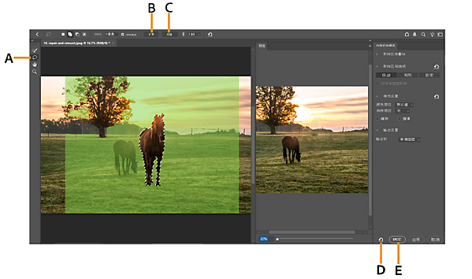

PSCC 从零开始：五分钟上手，修图不求人
第一次接触 PSCC？别怕，这篇带你从完全不懂到能用起来。不用任何基础，跟着走一遍就能独立搞定常见的修图需求。
这篇能带你从完全不懂 PSCC 到真的用起来——不需要任何修图基础，跟着做一遍就能独立搞定日常最常见的几种修图场景。
它到底是干嘛的
你可以把 PSCC 想象成一个超级修图工具箱——里面塞满了各种小刀小铲小刷子，专门用来"改照片"。不管是手机拍的旅游照里不小心入镜的路人、想换成竖屏发朋友圈的横屏视频截图、还是一张想压缩尺寸又不想变形的证件照，PSCC 都能帮你搞定。
很多人一听 "Photoshop" 就觉得"好复杂好专业我学不会"，其实不然——PSCC 虽然功能多到吓人，但日常修图真正高频用到的工具也就那么几个，而且 Adobe 近几年加了不少 AI 功能，你去PSCC官网翻一下功能列表就知道，很多以前要抠半小时的活儿，现在点几下就完事。
五分钟上手：从安装到第一次跑通
别被安装过程劝退，整个流程其实很丝滑。
第一步：装软件。 去PSCC下载拿到安装包，双击运行就行。安装时会让你选安装路径，默认是 C 盘，如果 C 盘空间紧张就换个盘，其他选项一路默认。
第二步：首次启动。 第一次打开会让你登录 Adobe 账号（没有就注册一个，免费的），然后会让你选"开始使用 PS"。等个十几秒，主界面就出来了。
第三步：打开一张照片试试。 左上角菜单"文件 → 打开"，随便挑一张你电脑里存的照片（手机拍的也行，只要是 jpg 或 png 格式）。你会看到照片出现在屏幕正中央，左侧一排小图标是工具栏，右边堆着几个面板——别急着研究这些，先知道它们在哪儿就好。

第四步：做第一件小事。 试试把照片里的一个小东西去掉——比如照片角落里的垃圾桶。用左侧工具栏里的"对象选择工具"（图标像一个方框套着虚线），在垃圾桶周围拖一下，PSCC 会自动把它选中。然后按 Shift + F5，弹出对话框里"使用"选"内容识别"，点确定。垃圾桶消失了，背景自动补得干干净净。
恭喜，你完成了人生第一次 PS 修图。整个过程加起来不到五分钟。
上手后先玩这三个功能
学会打开文件之后，先别急着探索那些看着就头大的菜单。花半小时玩玩下面三个功能，日常 80% 的修图需求都能覆盖。
功能一：内容识别填充——移除任何你不想要的东西
刚才你已经体验过一版快速填充了。这个功能真正厉害的地方在于，它能分析周围像素，智能生成无缝填补区域。想删照片里的路人、电线、水印、多余的建筑？选中 → 内容识别 → 搞定。
你可以打开专业工作区试试——选中要移除的东西后，右键选"内容识别填充"。工作区里左侧有个取样画笔，你可以用红色标记"禁止取样"的区域（比如人物的脸，告诉 AI 别从这儿偷像素），用绿色标记"允许取样"的区域。调完之后效果会更自然，不会出现"把旁边的树枝复制过来粘在人脸上"这种尴尬情况。

你会发现，这个功能的核心逻辑就是"让 AI 猜这儿原本应该是什么样"。猜得准不准取决于周围有没有足够好的参考像素——如果删的是一堵砖墙中间的一块，AI 能完美续上；如果删的是一整片天空中间的飞鸟，那 AI 也能搞定，因为天空本身就是均匀的。但如果你想删的是一张复杂人脸中间的一颗痣……别担心，PSCC 有专门的人像修图工具，那是另一个话题了。
功能二：内容感知缩放——让图片只在空白处变形
有没有遇到过这种情况：拍了一张横屏的风景照，想发朋友圈但朋友圈是竖屏的（9:16），直接拉伸的话画面里的人会被拉瘦变形，看着很怪。内容感知缩放就是专门解决这个的。
操作很简单：选中照片所在的图层（如果是背景层，先双击转成普通图层），菜单"编辑 → 内容感知缩放"，然后拖动边角控制点往你想要的比例拉。你会看到——画面里的人物、建筑等主体完全不动，只有背景区域在被挤压或扩展。
选项栏里还有个"保护肤色"选项，勾上之后 AI 会额外保护人物皮肤区域，人像场景必开。如果 AI 识别不准（比如画面里有大片重复图案像砖墙），你还可以手动建个 Alpha 通道告诉它"这块别碰"。
这个功能在三种场景下特别好用：横屏改竖屏发朋友圈、把 4K 大图缩到手机能看的尺寸、设计好的海报需要换个纸张比例不想重排内容。
功能三：图层——理解它就理解了 PS 的灵魂
图层这个概念是 Photoshop 的灵魂，也是新手最容易犯懵的地方。你可以把图层想象成一叠透明的塑料薄片——每一层都可以单独画东西、单独修改，叠在一起就是最终画面。
为什么要用图层？举个简单的例子：你想给照片加一行字，如果直接写在照片上，之后想改字的颜色或大小就很麻烦。但如果文字在一个独立的图层上，你随时可以改，照片本身一点不受影响。
打开照片后，右边面板组里默认就能看到"图层"面板。每打开一张照片它就是一个背景图层。你可以在菜单"图层 → 新建"里加新图层，也可以在图层面板底部点那个加号。试试新建一个空图层，用左侧的画笔工具随便画两笔——你会看到画在新图层上，原来的照片完全没被破坏。
理解了图层，你就理解了为什么 PSCC 能做到"改这一块儿不影响那一块儿"。之后学调整图层、蒙版这些进阶功能，都是基于图层的概念，想深入的话可以去PSCC文档里翻。
小白的三个常见疑问
玩了一圈之后你大概率会遇到下面这三个问题，提前知道省得慌。
疑问一：PSCC 闪退了怎么办？
别慌，闪退的原因基本逃不开五种：显卡驱动过时、字体损坏、第三方插件冲突、用户配置文件损坏、软件安装本身坏了。按概率从高到低试试：
先检查显卡驱动——打开"帮助 → 诊断 GPU"，PSCC 会告诉你驱动过不过时。过时就去 NVIDIA 或 AMD 官方渠道下最新版（创作者推荐用 Studio Driver，比 Game Ready 稳定）。
如果显卡驱动没问题，试试按 Shift 启动 PSCC——这会进入安全模式跳过所有第三方插件和字体缓存。安全模式不闪退的话，问题就在插件或字体里，逐个禁用排查就行。
还不行？试试启动时同时按 Ctrl + Shift + Alt（Mac 是 Cmd + Shift + Option），弹出对话框问"是否删除设置文件"时点是——这会恢复默认设置，但会删掉你的自定义快捷键和工作区。最后才考虑用 Creative Cloud 修复或重装。
疑问二：为什么我做的效果和教程里不一样？
大概率是版本问题。PSCC 更新频率很高，Adobe 经常悄悄改界面位置或调整工具参数。教程是 2022 年录的，你用的是 2025 版，界面长得不一样很正常。别纠结按钮在哪个角落，功能本身没变——实在找不到就用顶部的搜索栏（快捷键 Ctrl + F）直接搜工具名字，一搜就定位。
还有一种可能是教程用的是英文版，你用的是中文版。工具名字对不上的时候，搜一下"PSCC 中英对照"就能找到对应关系。
疑问三：我该用哪个版本？
如果你是完全的新手，直接装最新版就行。最新版的 AI 功能最全，界面也最友好。等你熟练到能分清哪些功能是你高频用的、哪些根本碰不到，再考虑要不要装一个旧版本（有些人喜欢用 2020 版因为某些插件兼容性更好）。但新手阶段没必要纠结这个——用最新版，跟着最新教程走，省最大的事。
接下来怎么走
能用内容识别移除路人、用内容感知缩放改比例、理解图层概念——这三件事搞定之后，你已经能独立处理日常 80% 的修图需求了。接下来想进阶的话，推荐从调整图层入手——它能让你无损地调亮度、对比度、色温，而且随时可以改参数，是专业修图的核心技能。
PSCC 的天花板很高，但入门其实没那么难。别被"专业软件"这四个字吓住，动手玩起来，比看一百篇教程管用。如果你习惯在 Git 上翻资料，这套文档在GitHub、Gitee和GitCode上都有同步。